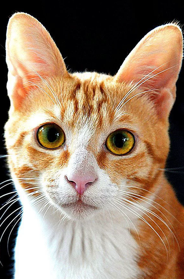

Meus Animais Favoritos
André
🤍
Sua lista está vazia
Você ainda não favoritou nenhum animal. Explore nossa vitrine e clique no coração!
Ver animais para adoção
Você ainda não favoritou nenhum animal. Explore nossa vitrine e clique no coração!
Ver animais para adoção